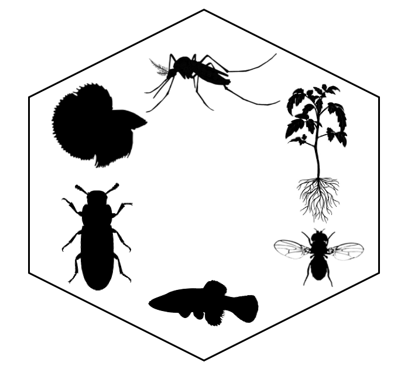

The epistasis database.
Since the 1930s, scientists have debated how much trait divergence is driven by epistasis rather than by simple additive gene action. This database compiles over 1,600 line-cross datasets from 130 plus publications, quantifying additive, dominance, and epistatic effects across the tree of life. Every record links back to the primary paper and the underlying dataset so the numbers can be audited and reused.

Cumulative distribution of the proportion of trait divergence explained by epistasis.
Each point is one dataset. Vertices: Additive (top), Dominance (bottom-left), Epistasis (bottom-right).
| Organism ▲ | Phenotype ▲ | SCS ▲ | Trait ▲ | Clade ▲ | Div. ▲ | MYA ▲ | Type ▲ | Add ▲ | Dom ▲ | Epi ▲ | Data ▲ |
|---|
Since the 1930s, scientists have debated the importance of epistatic gene action relative to additive gene action in trait divergence. Previous studies have been limited in the number of datasets for which they can accurately quantify epistatic effects. To resolve this debate, we conducted an extensive literature search and generated several datasets that let us quantify the composite genetic effects underlying trait divergence across the tree of life.
This database houses over 1,600 datasets from 130 plus publications, allowing viewers to visualize the effect of epistasis on a range of organisms and phenotypes. Use the Visualization tab to explore cumulative distributions of epistatic effects with flexible color-coding and subsetting. The Ternary plot shows the relative contributions of additive, dominance, and epistatic effects for each dataset. The Data table tab provides a searchable, sortable view of all records, and each underlying dataset can be downloaded individually.
Elliott, Jorja, Maximos Chin, Brian E. Fontenot, Sabyasachi Mandal, Thomas D. McKnight, Jeffery P. Demuth, Heath Blackmon. "Wright was Right: Analysis of over one thousand datasets supports the critical role of epistasis in genetics and evolution."
Submitting data. If you are aware of any records that should be added to the database, please email us and we will incorporate the missing data.
Usage rights. Data taken from the database must not be reproduced in published lists, online databases, or other formats, nor redistributed without permission. The information in this database is provided solely for personal and academic use, and must not be used for the purposes of financial gain.
Current version: 1.0 · Last updated: 14 July 2023